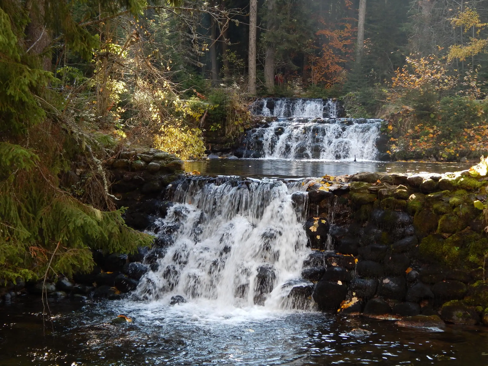
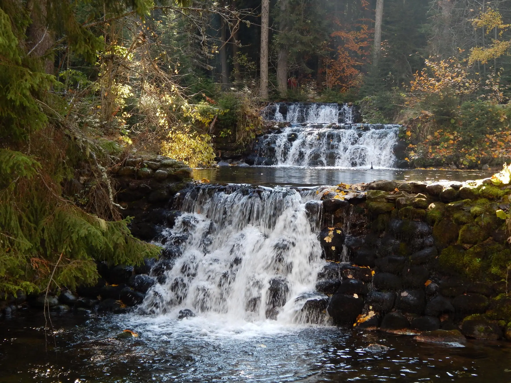
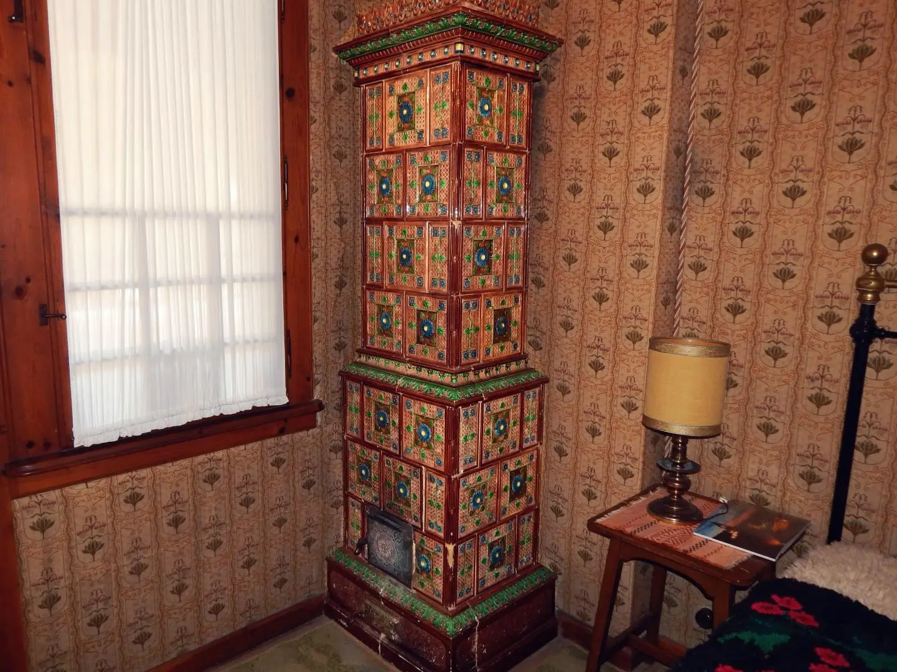

История на Дворецът

Строен в периода 1898 - 1914 година от княз Фердинанд I, дворецът "Царска Бистрица” е най-значимата историческа забележителност на к.к. Боровец. На броени крачки от основите на двореца разлива водите си река Бистрица, чийто извор са ледените езера в подножието на връх Мусала.
 

Самата сграда представлява оригинална интерпретация на българската архитектура от периода на Възраждането, повлияна от някои европейски стилове. Такава комбинация от стилове наблюдаваме и при вътрешната декорация на двореца. Наред с богато дърворезбованите тавани и колони в духа на българската традиция, оригиналната европейска мебел със загатнати фолклорни мотиви, чипровските и котленски килими носещи славата на България по света, може да се види автентична каюта, личен подарък от капитана на кораба “Нова Америка" Жан-Луи Морис на Княз Фердинанд 1.

Запазени са автентичните кахлени камини, чиито декоративни плочки са шедиовър в керамичното производство от началото на XX век, като любопитен факт е, че сред всички петдесет няма две еднакви.
Добре съхранена е и икзлючителната колекция от ловни трофеи на царското семейство, свидетелство за ловоната страст на Цар Борис III, грижливо събирана в продължение на повече от петдесет години. Макар и представена най-вече от глухари - едно истинско предизвикателство за всеки ловец, не липсват и елени, диви кози, глигани, сръндаци и тетреви.
Макар че оригиналният алпинеум, създаден от Княз Фердинанд I, не е устоял на времето в парка могат да се видят дървета нетипични за този височинен пояс.
През 2009 г. старата конюшнята е превърната в галерия.

През 2006 година на 21 октомври бе осветен параклис “Св. Йоан Рилски", построен и посветен на Княгиня Калина и Китин Муньос, по случай венчавката им състояла се в “Царска Бистрица" през 2002 г.


Своеобразен връх за времето си е водната електроцентрала, строена през 1912 година, чиято турбина “Siemens" продължава и до днес да захранва двореца с електричество. Възхищение будят и електрическите радиатори, които могат да съперничат с дизайна и качеството си на съвременните такива.